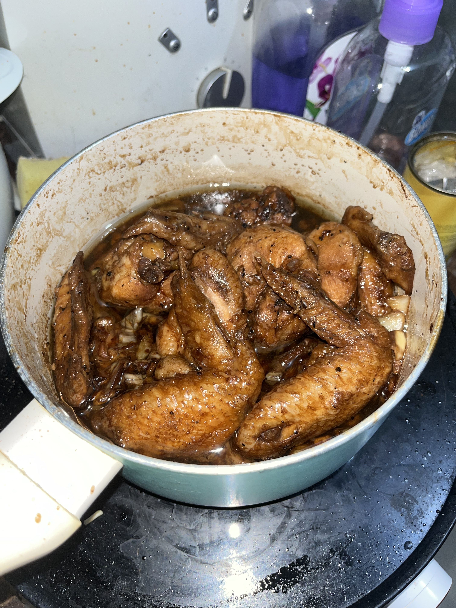

How to cook Adobong Manok

Description
Chicken slow cooked in a mix of soy sauce and vinegar, perfectly eaten with rice.
Ingredients
- chicken (mix of thigh or wing parts), 1kg
- soy sauce, 1 cup
- vinegar, 1 cup
- garlic, 2 heads
- sugar, 3 tablespoons
- bay leaves, 4 pieces
- cooking oil, 3 tablespoons
- MSG, to taste
- black pepper, to taste
Steps
- In a bowl, put the chicken with the soy sauce, sugar, MSG, and black pepper.
- Crush the garlic or mince it finely, then add it to the bowl of chicken. Mix thoroughly.
- Marinate the chicken for at least 2 hours.
- After marinating the chicken, sear the chicken in a big enough pot with cooking oil. Make sure not to overcrowd the chicken. Continue until the skin develops nice browning.
- Once all the chicken has been seared, pour in the soy sauce-garlic marinate into the pot. Add in the vinegar and bay leaves and let simmer on medium heat for about 30 minutes. Stir occasionally to prevent burning.
- Turn down the heat to low and let simmer for another 30 minutes. Stir occasionally to not let the chicken burn as well as to allow the sauce to reduce to the desired consistency.
- Once the desired consistency has been reached, plate the chicken with rice. Enjoy!
Home